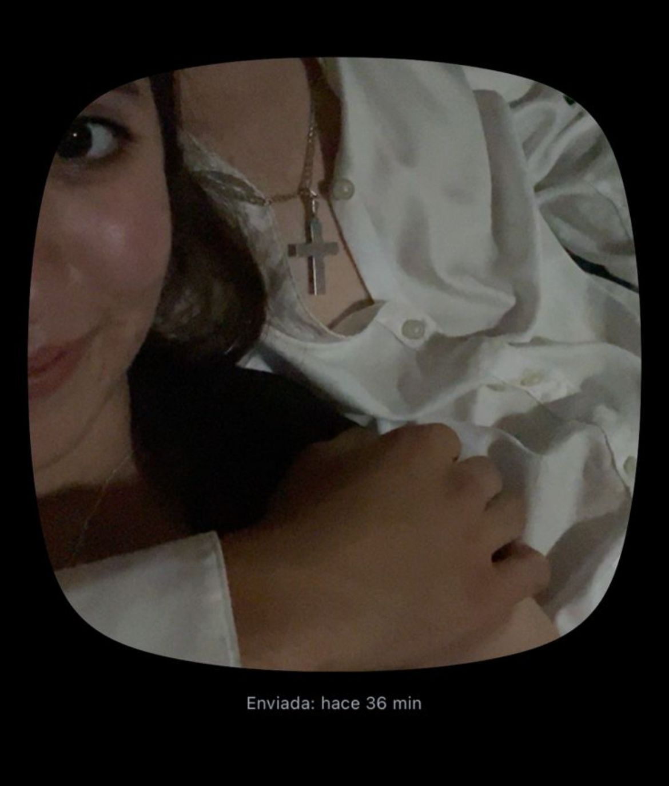
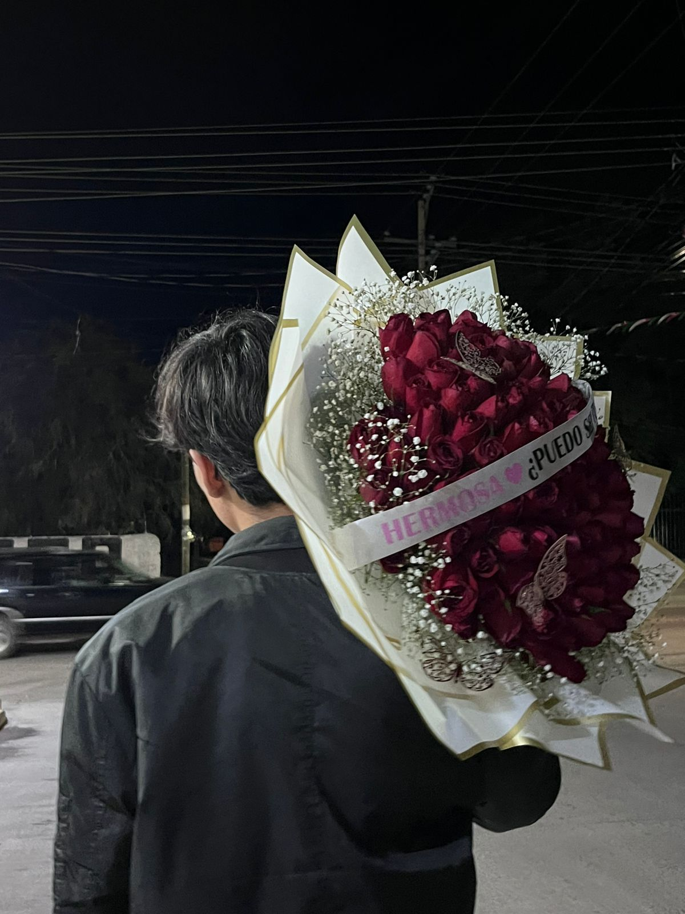
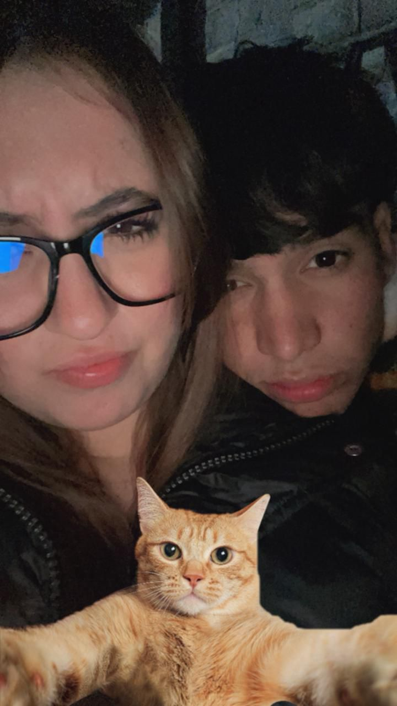
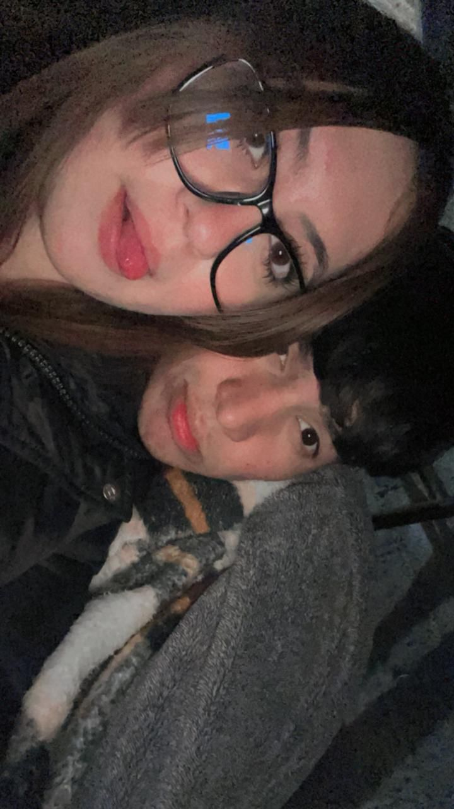

Nuestra Historia 💖
Hola flakito bello. En este librito quiero iniciar mencionando un poco de como comenzó nuestra historia. Aún recuerdo cómo yo estaba acostada ese día en la sala de mi casa y me llegó tu mensaje; recuerdo que al inicio para mi era una plática sencilla, de un nuevo amigo que acababa de hacer pero al continuar la plática se sentía el famoso "maripositas en el estómago". Es gracioso porque hasta mejor me fuí a mi cuarto para estar más cómoda al hablar contigo jajajajaja. Cada recuerdo que formé contigo es tan bonito y nostálgico; sé que tenemos nuestra historia un poco tensa y complicada pero sé que nos estamos esforzando por borrar los malos recuerdos y empezar a crear nuevos y bonitos. Algo que recuerdo mucho son esas desveladas en pandemia donde pasabamos toda la noche hablando, jugando y al despertar ver que la llamada había permanecido todo el tiempo sin ser colgada, no sé, para mí era algo tan tan bonito que recordarlo siempre me saca una sonrisa. También recuerdo nuestras salidas a la plazita donde daba lata todo el día por querer verte y cuando te veía llegar me ponía muy nerviosa que no sabía como comportarme, como actuar jajaja. Sin duda eres de mis mejores recuerdos del final de mi niñéz y toda mi adolescencia. Eres todo lo que siempre quise y todo lo que siempre soñé 💗

Nuestra Canción 🎶
Pon play y disfruta el libro...
Capítulo 1 🕷️
Si te soy sincera, no sé en que momento deje de verte como "un amigo", pero estoy segura que nunca pude volver a verte así. Yo sé que dirás "según nunca me dejó de ver con ojos de amor pero por más que le rogaba no quería estar conmigo"; Y si, en eso tendrías razón. Ya eran muchas heridas las cuales intentaba curar y llegaban más; yo ya no quería que ninguno de los dos sufriera. Y si te soy sincera, un día con el corazón hecho pedazos y "tocandome el corazón" prometí que me alejaría de ti aunque me doliera toda la vida porque yo solo quería que fueras felíz aunque eso implicara tener que irme de tu lado. Ya no quería más chismes, malos ratos, solo quería que entre nosotros todo permaneciera bien pero me di cuenta que si nos teníamos cerca nos lastimaba, el alejarnosdefinitivamente nos mataba vivos por completo jajaja. Así que decidí tomar una última oportunidad arriesgando todo con miedo a perderlo por completo y creeme que estoy felíz de haber tomado esa decisión. Fuiste la mejor decisión que he tomado en toda mi vida 💞
Nuestras Fotos 📸




Nuestros Videos 🎥
Final ❤️
“Si todo empezó con un mensaje, quiero que todo lo demás siga empezando contigo.” Eres sin duda el amor de todas mis vidas, el niño de mis ojos y mi razón de existir. Me gusta mucho estar contigo, abrazarte, besarte y hacerte "repelar" por no querer besarte jajaja. Gracias por hacerme sentir tantas cosas bonitas en todos estos años. Sin duda espero con ansias el día que nuestros hijos nos pregunten por nosotros y suspirar mientras contamos cada uno la versión de como nos enamoramos y como terminamos juntos ❤️